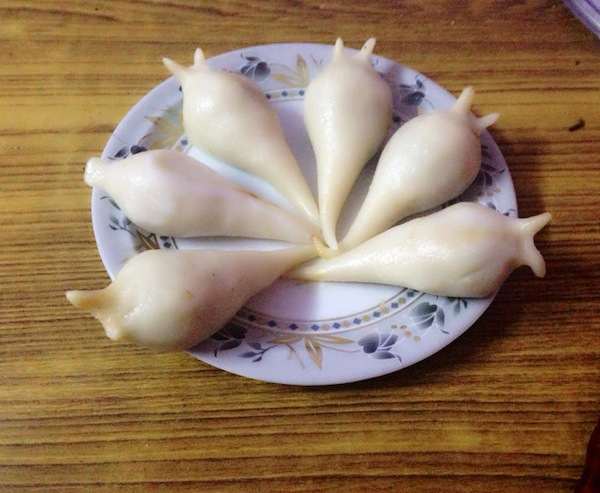

YOMARI🇳🇵

Yomari is a traditional Newari delicacy from the Kathmandu Valley, made of steamed dumplings filled with a sweet mixture of jaggery and sesame seeds
Ingredients:
For the Dough:
- 1 cup all-purpose flour
- 1/2 cup water (approximately)
- 1/4 cup sugar
- A pinch of salt
For the Filling:
- 1/2 cup jaggery (grated or chopped)
- 1/4 cup sesame seeds
- 1 tablespoon ghee (clarified butter) or regular butter
Instructions(Steps to make):
-
Prepare the Dough:
Mix Ingredients: In a bowl, combine flour, sugar, and a pinch of salt. Gradually add water, mixing until a smooth, pliable dough forms.
The dough should be soft but not sticky.
Rest Dough: Cover the dough with a damp cloth and let it rest for about 30 minutes.
-
Prepare the Filling:
Melt Jaggery: In a pan, heat ghee or butter over low .
Add the jaggery and stir until it melts completely.
Add Sesame Seeds: Stir in the sesame seeds and cook for another 2-3 minutes until the mixture thickens slightly. Remove from heat and let it cool.
-
Shape the Yomari:
Divide Dough: Divide the dough into small balls. Flatten each ball into a small circle about 3-4 inches in diameter.
Add Filling: Place a spoonful of the jaggery and sesame mixture in the center of each dough circle.
Form Dumplings: Carefully fold the dough around the filling, pinching the edges together to seal. Shape the filled dough into a crescent or a traditional "Yomari" shape with pointed ends.
-
Steam the Yomari:
Prepare Steamer: Line a steamer basket with parchment paper or lightly oil it to prevent sticking.
Steam: Place the shaped Yomari in the steamer, making sure they don’t touch each other. Steam for about 10-15 minutes until the dough is cooked through and slightly translucent.
-
Serve and Enjoy:
Enjoy Warm: omari is best enjoyed warm. It’s a delightful sweet treat that’s both unique and comforting.
Go to Top
Homepage